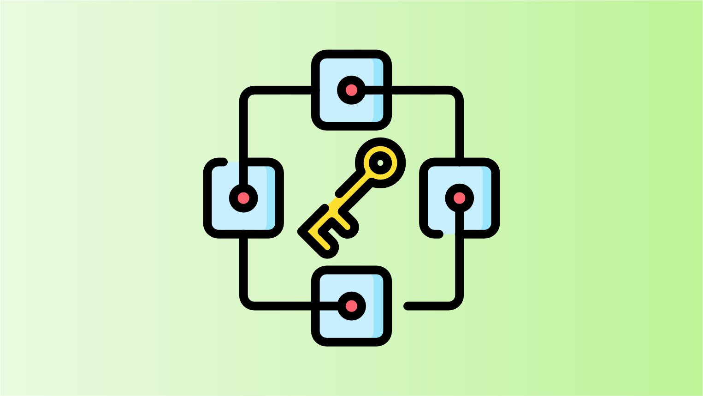

Groups
Optimized Trade Execution
This section examines methods that optimize trade execution in blockchain, addressing specific attacks through transaction optimization and slippage tolerance strategies, while maintaining system decentralization and efficiency.
Professional Market Makers
This approach employs professional market makers in decentralized exchanges to ensure fair transaction orderings. It involves off-chain agreements on exchange rates and on-chain transaction execution, balancing efficiency and security.
Trusted Third Party Ordering
This method relies on trusted third parties for transaction ordering, aiming to mitigate reordering attacks. It involves direct transaction submissions to block proposers or solvers, enhancing efficiency while potentially compromising decentralization and security.

Algorithmic Committee Ordering
This approach uses an algorithmic committee for fair transaction ordering in blockchain, balancing consensus and fairness. Despite efforts like Hashgraph and Byzantine consensus protocols, challenges persist with network-based attacks and committee honesty.
On-Chain Commit & Reveal
The on-chain commit & reveal method orders transactions in two phases, commitment and revelation, directly on the blockchain. It effectively prevents reordering manipulations and maintains decentralization but increases on-chain space and transaction fees, adding delay.
Off-Chain Commit & Reveal
Off-chain commit & reveal schemes use a committee for transaction ordering, handling commitment and revelation off-chain. They reduce manipulation risks and jostling, but increase costs and potentially compromise decentralization and security due to the centralized committee structure.